android — Antes da porta falsa

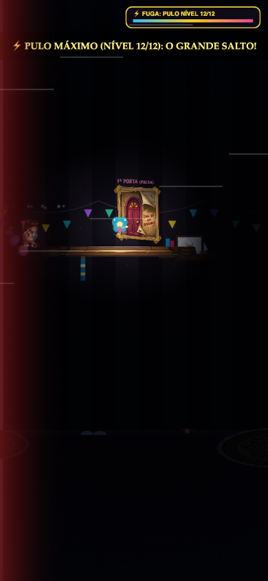
Capturas dos mesmos apoios e da mesma trajetória. Android e iPhone: perfis emulados no Chrome, sem validação nativa. Desktop: Chrome. Os gráficos e logs registram todos os frames; as imagens isoladas não demonstram estabilidade temporal.

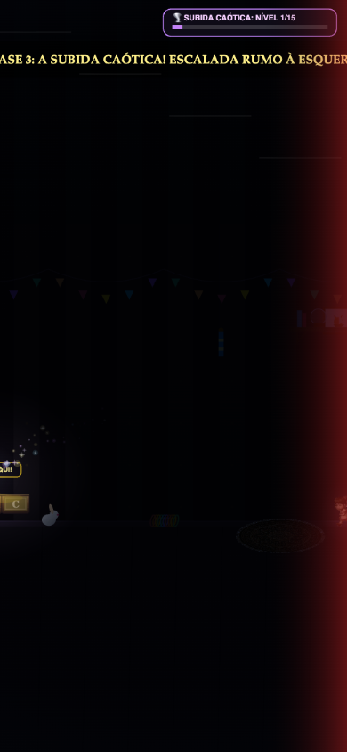
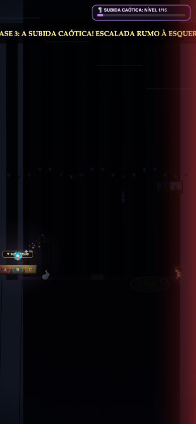
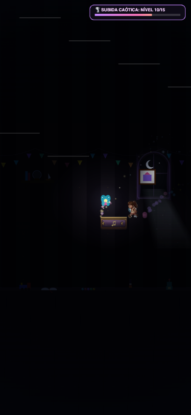
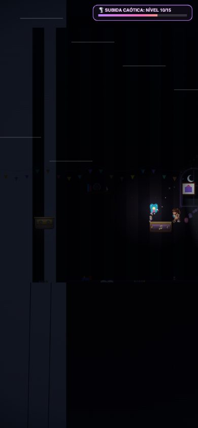
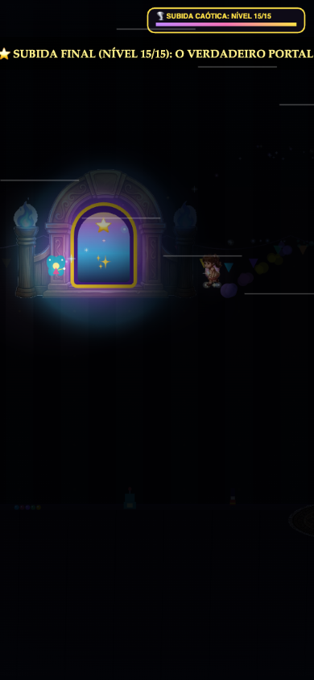
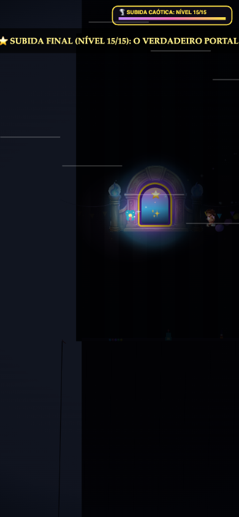
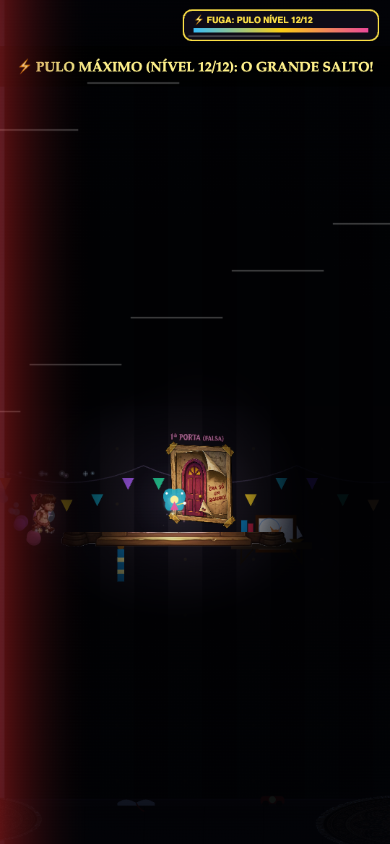

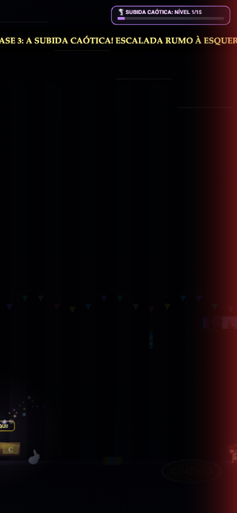
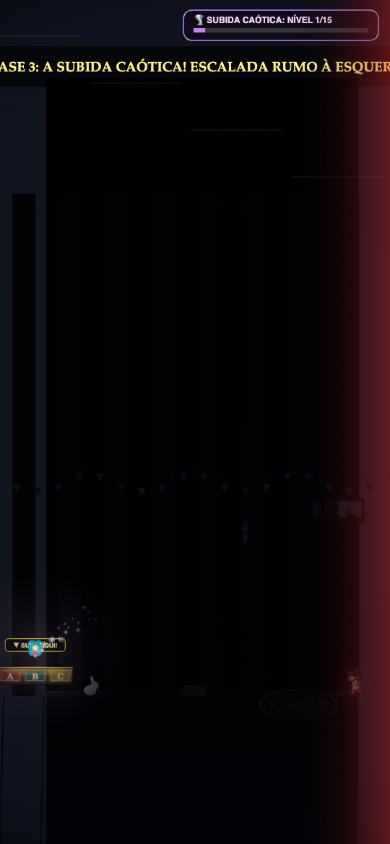
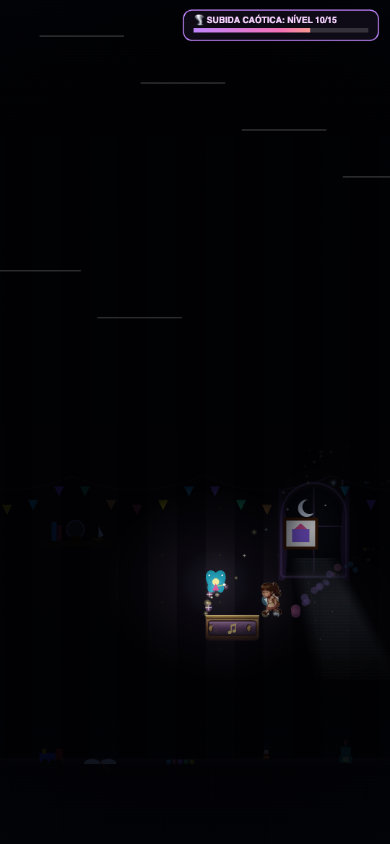
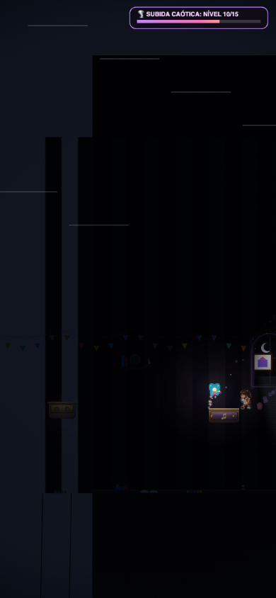
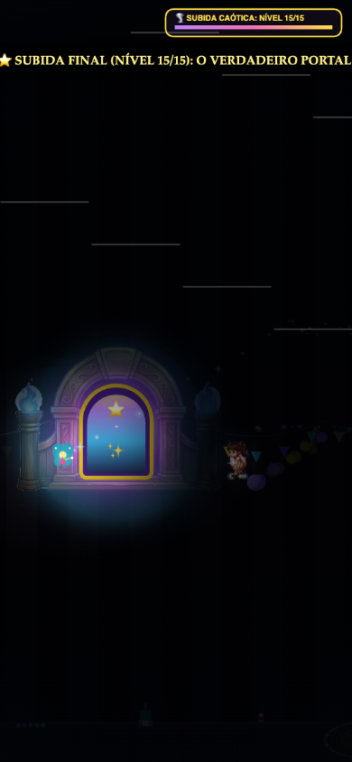
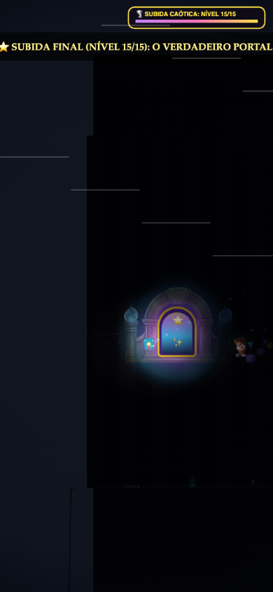

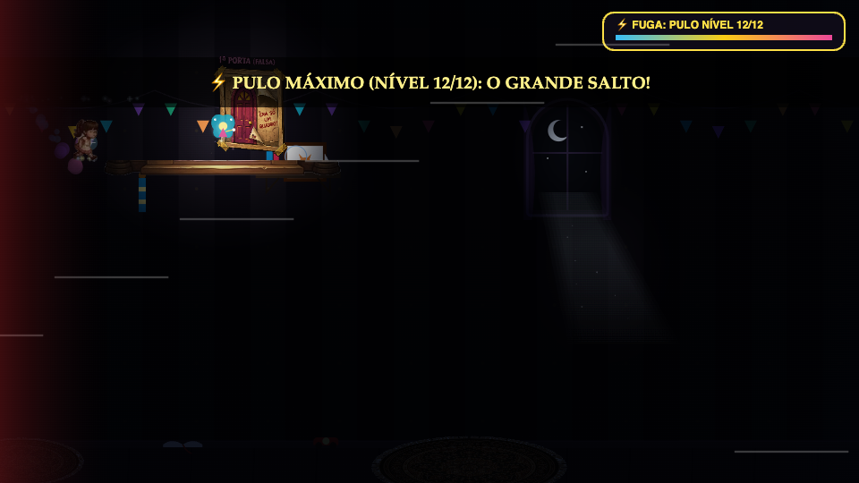
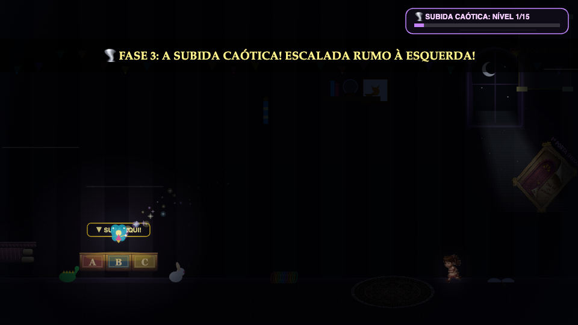
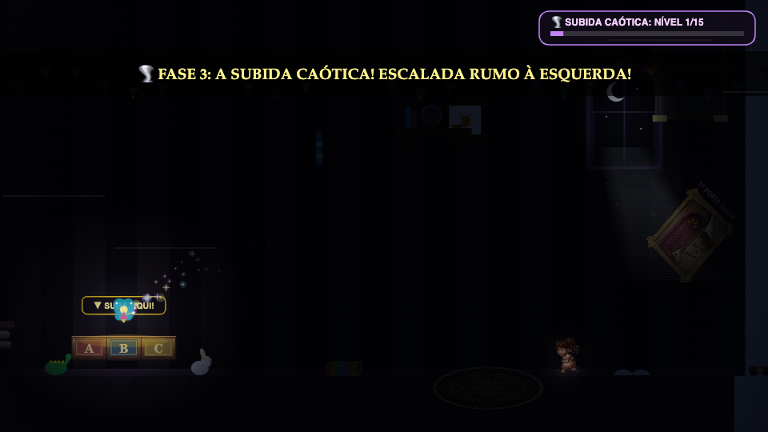
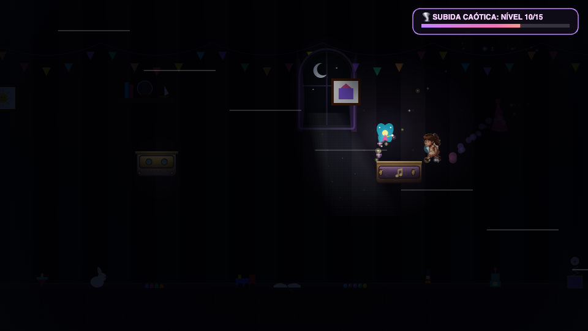
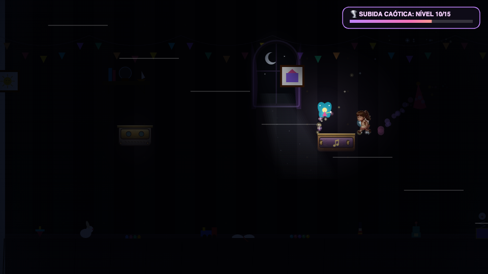
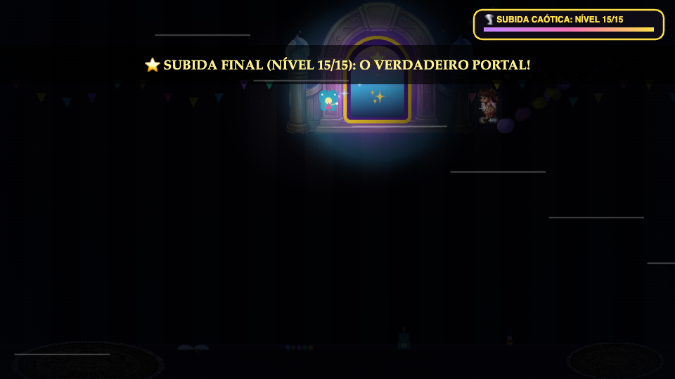
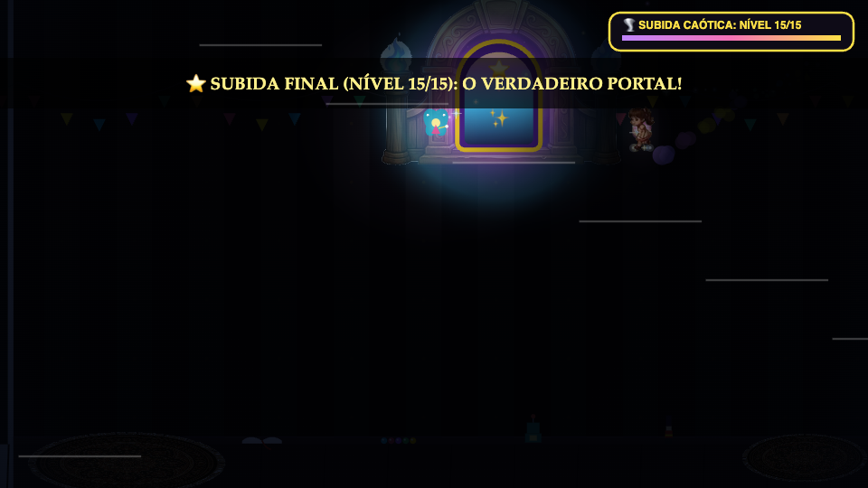